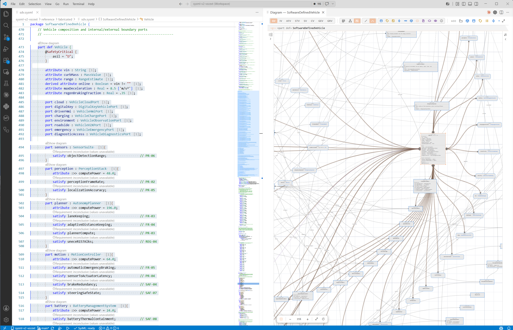
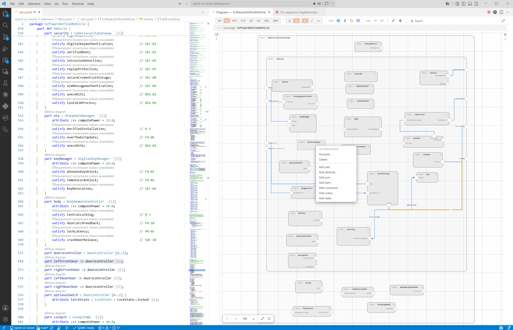
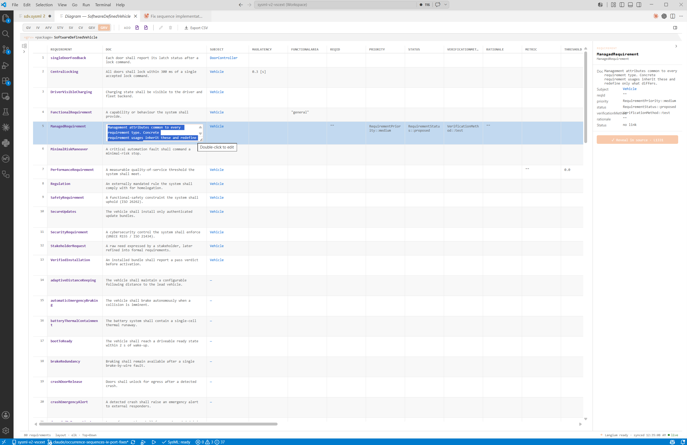

Download the VSIX
Grab the latest vscode-sysml-v2-*.vsix from the releases folder.
How to install the extension, open the software-defined vehicle example, use the editor intelligence, render and edit live diagrams, and configure project defaults — everything local, with no Java runtime, PlantUML server, or telemetry.
The extension ships as a single VSIX package. There is nothing else to install — no Java, no PlantUML, no diagram server, no cloud account.
Grab the latest vscode-sysml-v2-*.vsix from the releases folder.
In VS Code run Extensions: Install from VSIX… from the Command Palette (Ctrl/Cmd+Shift+P) and pick the file.
Open a folder containing .sysml, .kerml, or .kpar files.
Open a .sysml file and wait until the status bar shows SysML: ready. The bundled library is pre-indexed, so this is fast.
The extension runs entirely on your machine. Source text, diagram side-cars, and project config stay in your repository.
Use the source-repository example as a guided feature tour:
reference/sdv.sysml
The model describes a software-defined vehicle with external actors, vehicle subsystems, typed ports and interfaces, actions, states, sequences, requirements, verification cases, variation points, and geometry examples. It is intentionally broad, so every diagram view has meaningful content to show.

Treat SysML and KerML files like code. Everything below is server-backed and works across your workspace and the read-only bundled standard library.
.sysml and .kerml.RES001, SEM006, UNIT003, and MIG001.| Command | Purpose |
|---|---|
SysML: Show Diagram | Open the live diagram preview for the active model or element. |
SysML: Which Diagram? (view guidance) | Pick the question you want answered and open the recommended view. |
SysML: Toggle Diagram Side / Tab Mode | Switch between the side panel and a full tab (Ctrl+Alt+D). |
SysML: Show Diagnostic Reference | Open the diagnostic-code catalogue. |
SysML: Open Standard Library Folder | Browse the bundled OMG standard-library source. |
SysML: Open .kpar Archive | Open an OMG package archive as read-only extracted model files. |
SysML: Export Abstract Syntax JSON | Export the active textual model to OMG abstract-syntax JSON. |
Run SysML: Show Diagram on sdv.sysml. The extension detects which views have content and offers the relevant options. Diagrams render locally on a React Flow canvas.
| View | Shows |
|---|---|
| General | Definitions, packages, usage links, specialization, imports, requirements, metadata, variation, compartments, and quick category filters. |
| Interconnection | Nested parts, ports, connectors, bindings, interfaces, item flows, endpoint docking, and reconnectable connectors. |
| Action Flow | Actions, control nodes, send/accept nodes, item flows, final/terminate nodes, and performers. |
| State Transition | States, composite and parallel state frames, transitions, guards, effects, exhibit and causation links. |
| Sequence | Lifelines, activation bars, messages, payload labels, replies, and event occurrences. |
| Case | Use, analysis, and verification cases with actors, subjects, includes, specialization, and optional boundary-box presentation. |
| Geometry | 2D plan or isometric 3D shape layout from model-declared positions and dimensions. |
| Grid | Editable requirements table with documentation, subject, per-attribute columns, constraints, satisfy/verify links, status, and CSV export. |
| Browser | Package and membership tree panel with expand/collapse and diagram-element highlighting. |
Diagram colors follow the active VS Code theme. Layout state is stored under .vscode/sysml/diagrams/ in the repository, never inside the .sysml source.


The diagram preview is not just a picture — it sends guarded workspace edits through the language server.
Common actions:
The text model stays authoritative. If an edit would produce invalid SysML, the server rejects it instead of corrupting the file.
The complete OMG SysML v2 release standard library is bundled and pre-indexed:
sysml.standardLibraryPath can point at an external sysml.library/ source tree, a .kpar archive, or a directory of .kpar archives. Leave it empty to use the bundled library.
Open VS Code settings and search for sysml.
| Setting | Default | Purpose |
|---|---|---|
sysml.editor.autoImportOnSave | true | Add missing cross-package imports on save. |
sysml.diagnostics.units | true | Enable quantity and unit diagnostics. |
sysml.inlayHints.dimension | false | Show physical-dimension hints. |
sysml.preview.diagrams.defaultKind | gv | Preferred primary diagram view. |
sysml.preview.diagrams.defaultMode | side | Open diagrams in side-panel or tab mode. |
sysml.preview.diagrams.update | on-save | Choose live, on-save, or manual diagram refresh. |
sysml.preview.diagrams.lineStyle | orthogonal | Default connector routing style. |
sysml.preview.diagrams.syncUsageToDef | true | Let Interconnection structural edits synchronize to typed definitions. |
sysml.validation.severities | {} | Override individual diagnostic severities. |
Project teams can check in .vscode/sysml/project.json to set diagram defaults consistently across a repository.
| Symptom | Fix |
|---|---|
Language identifier is not SysML. | Confirm the file extension is .sysml and select the language manually from the VS Code status bar. |
| Diagnostics look stale. | Run SysML: Restart Language Server. |
| A diagram view is missing. | The active model or selected anchor probably has no content for that view. Run SysML: Which Diagram? (view guidance) to choose the right view for your question. |
| A standard-library symbol does not resolve. | Leave sysml.standardLibraryPath empty to use the bundled pre-indexed library, or verify that your external path points at a valid source tree or .kpar archive. |
resources/sysml.library/ licenses.